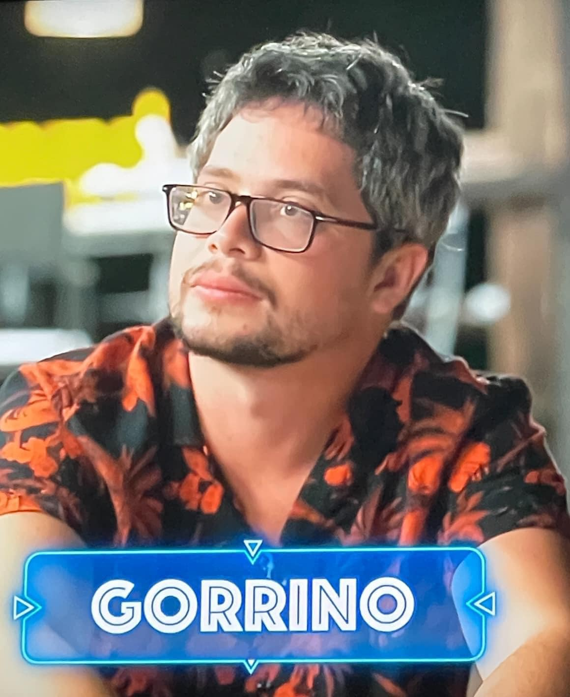
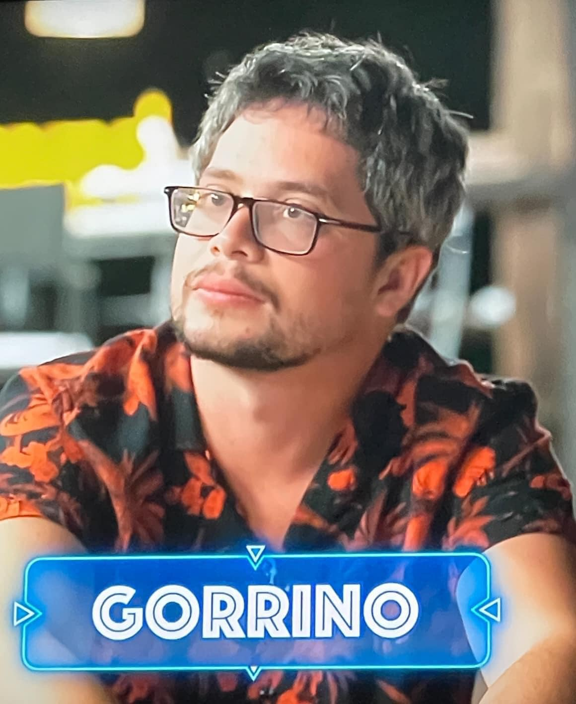

Progetti divulgativi
Sto lavorando ad un progetto top secret sulle neurodivergenze!
Nuove informazioni a breve.
Benvenuti nella mia pagina ufficiale come personaggio pubblico. Scoprite il mio libro, i miei progetti televisivi e molto altro!
Sto lavorando ad un progetto top secret sulle neurodivergenze!
Nuove informazioni a breve.
Sto lavorando al mio libro! Potete supportarlo su questo link. Grazie per il vostro sostegno!
Il libro tratta di fiabe e racconti. Non perdete l'occasione di contribuire a questa avventura unica, ricca di immaginazione e magia!
Ascolta la mia intervista radiofonica dove ho avuto il piacere di parlare dei miei progetti e dei miei valori. Puoi guardarlo su Youtube cliccando qui.

La mia partecipazione al programma mi ha permesso di esprimermi in un modo diverso da come ho fatto nel contesto televisivo.
Ascolta la mia intervista online dove ho avuto il piacere di parlare del mio libro. Puoi guardarlo su Youtube cliccando qui.
Questa collaborazione mi ha permesso di esprimere un lato di me molto personale.
Scopri il programma La Pupa e il Secchione, dove ho avuto il piacere di partecipare. Puoi guardarlo su Mediaset Infinity cliccando qui.
La mia partecipazione al programma è stata un'esperienza incredibile, che ha arricchito il mio percorso personale e professionale.
 

Sfoglia la galleria per scoprire momenti speciali e dietro le quinte del mio lavoro come personaggio pubblico.